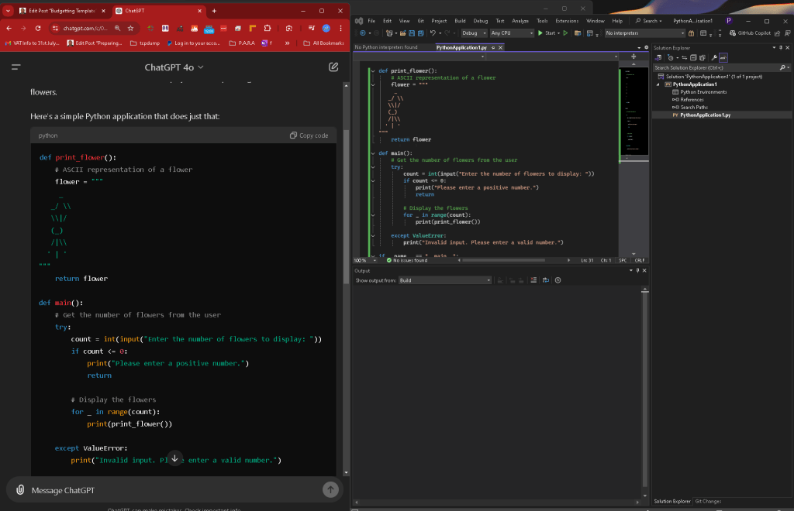
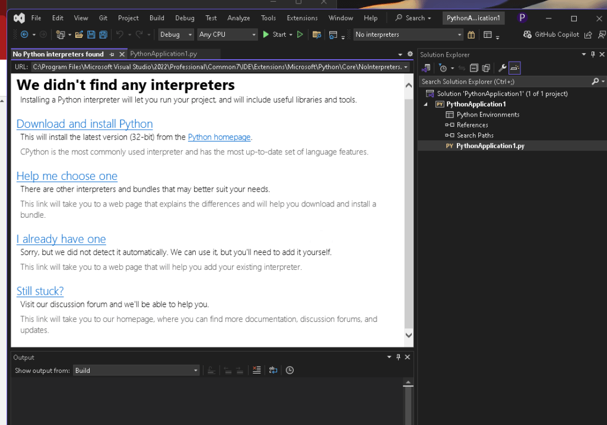
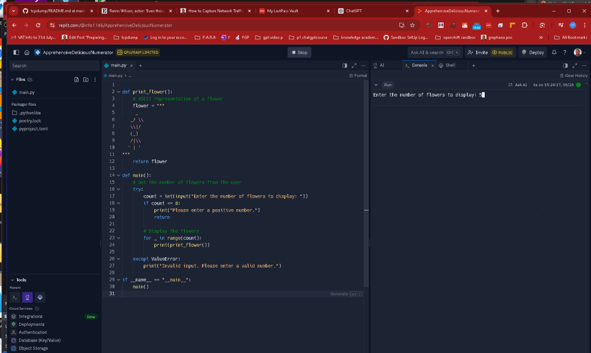
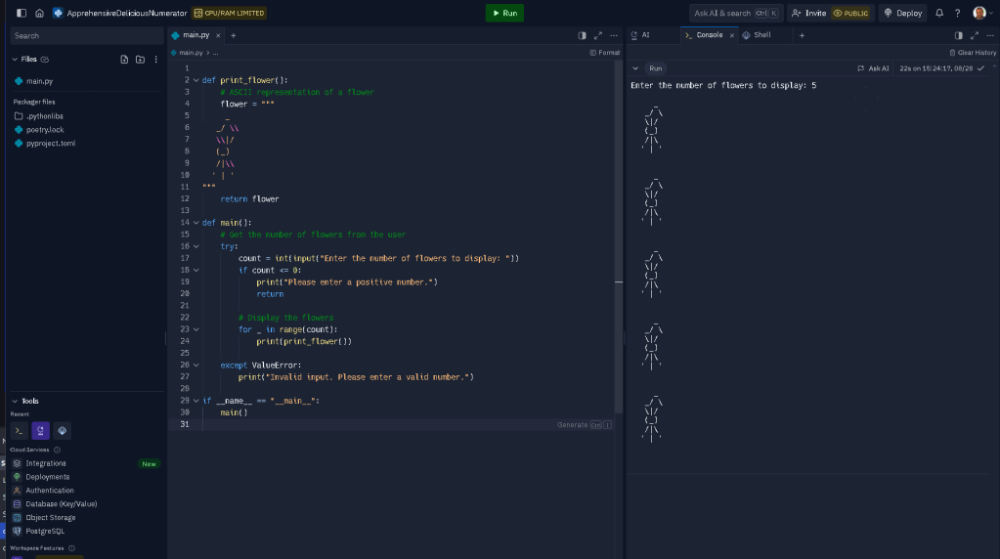

Running Python Locally

gpt for the symbols >
To create a Python application that displays an ASCII flower based on a user-provided flower count, we need to consider how to structure the program. The program should ask for a number from the user, then display the corresponding number of ASCII flowers.
Here's a simple Python application that does just that:
def print_flower():
# ASCII representation of a flower
flower = """
/ \
\|/
(_)
/|\
' | '
"""
return flower
def main():
# Get the number of flowers from the user
try:
count = int(input("Enter the number of flowers to display: "))
if count <= 0:
print("Please enter a positive number.")
return
# Display the flowers
for _ in range(count):
print(print_flower())
except ValueError:
print("Invalid input. Please enter a valid number.")
if name == "main":
main()
How This Python App Works:
-
Function Definition (
print_flower): -
This function returns an ASCII representation of a flower.
-
Main Function (
main): -
It asks the user to input the number of flowers they want to display.
-
It validates that the input is a positive integer.
-
If valid, it prints the specified number of flowers. If not, it displays an error message.
-
Error Handling:
-
The app handles non-integer inputs by catching a
ValueErrorand displaying a friendly message.
How to Run the Application:
-
Copy and paste the code into a Python file, e.g.,
ascii_flower.py. -
Run the file using a Python interpreter (Python 3.x recommended):
python ascii_flower.py
- When prompted, enter the number of flowers you want to see, and the ASCII flowers will be displayed in the terminal.
This simple program gives a good start to understanding basic input handling, error checking, and ASCII art in Python.
The error

Mitigation Virtual Machine > Vmware workstation
Rationale : Davinci Resolve Fails if there is a pythn environment conflict
Mitigation 2 > Testing use online environments
Yes, there are several ways to run Python code online without needing to install Python on your computer. Here are some popular options:
1. Online Python Interpreters and Compilers
-
Repl.it: A popular online IDE that supports Python and many other languages. You can write, run, and share your code directly from the browser. Repl.it
-
Google Colab: A free Jupyter notebook environment that runs in the cloud. It's especially useful for data science and machine learning tasks. Google Colab
-
PythonAnywhere: An online environment that allows you to run Python scripts and even host simple web apps. PythonAnywhere
-
OnlineGDB: A simple online compiler and debugger for Python and other programming languages. OnlineGDB
-
Trinket: A platform that allows you to run Python code directly in the browser, ideal for beginners and educators. Trinket
2. Browser Extensions
- Jupyter Notebook Viewer: Allows you to view Jupyter Notebooks directly in your browser. While this is more for viewing than running code, it can be useful for sharing and collaborating on notebooks.
3. Cloud Platforms
-
Azure Notebooks: Microsoft’s cloud-based Jupyter Notebook service, though it may require an account.
-
Kaggle Kernels: Kaggle provides free cloud resources to run Python notebooks, often used for data science and machine learning competitions. Kaggle
4. Educational Platforms
- Codecademy and Coursera: These platforms offer Python courses with built-in coding environments that allow you to write and execute Python code.
These tools are great for quickly testing code, learning Python, or even doing more extensive projects without installing Python locally.
Faster Results

Easy results not to have issues

Imported from rifaterdemsahin.com · 2024